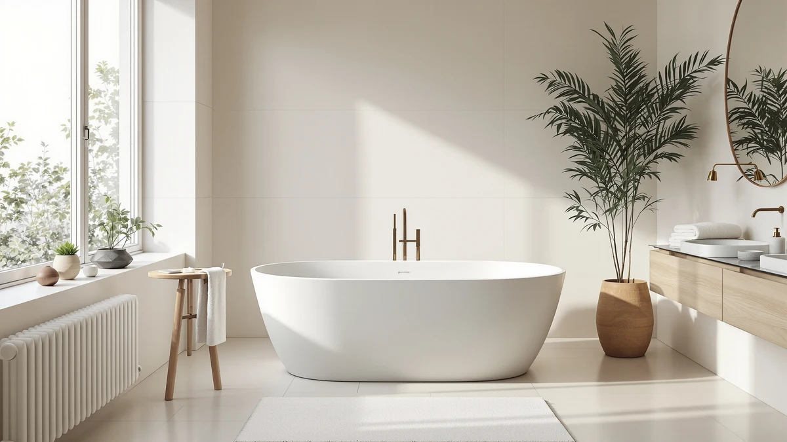

Freestanding Bathtub 59 inch Review (2026): Worth It?
Prices and picks verified as of October 2026. Independent, reader-supported reviews.


Quick Answer
In this freestanding bathtub 59 inch review, the EliteEdge Acrylic earns the top spot among the models we compared because it pairs a double-wall insulated shell with a reclined backrest at a lower price than most 67 inch alternatives. It fits bathrooms where a full-size soaking tub would crowd the room, and its specs hold up against pricier competitors.
Our pick: Freestanding Bathtub 59 inch Acrylic, $699.00 Check Price on Amazon
Bottom line: our top pick is the Freestanding Bathtub 59 inch Acrylic Free Standing Tub 59 Inch at $699.99.
Things to Know Before You Buy
- At 59 inches, this tub suits bathrooms that can't fit a standard 67 inch soaker but still want a full recline, not a perched sit-bath.
- Acrylic construction means it warms up faster than cast iron or stone resin and weighs far less, so a two-person install crew can usually carry it without equipment.
- Double-wall insulation keeps bathwater warmer longer, a detail worth checking on any acrylic tub since single-wall versions cool noticeably within 20 minutes.
- None of the four models in this comparison include a filler faucet or drain kit. Budget $150 to $400 extra for those parts before you set a total project cost.
- Freestanding tubs need floor-level water supply lines, which is a bigger plumbing change than swapping an alcove tub. Factor that into installation timelines.
This freestanding bathtub 59 inch review exists because the 59 inch size sits in an awkward gap between compact soaking tubs and the 67 inch models most retailers push as the default. You want enough room to recline without rebuilding your bathroom around a tub that barely clears the doorway, and you want a straight answer on whether the extra inches of a longer model are worth the higher price.
We focused this comparison on the EliteEdge Freestanding Bathtub 59 inch Acrylic, priced at $699.00, against three close competitors: the IDEALHOUSE 67 Inch Acrylic Freestanding Bathtub, the EliteEdge Freestanding Bathtub 67 inch Extra, and the WOODBRIDGE 54 inch Acrylic Freestanding Bathtub. The EliteEdge 59 inch model comes out ahead for most bathrooms because it matches the insulation and backrest design of its larger 67 inch sibling while staying easier to fit through a standard door frame and into a mid-size bathroom footprint.
None of these four tubs are a bad purchase. Each one uses acrylic as its base material, each lands within a $40 price band, and each targets the same buyer: someone replacing an alcove tub with a freestanding soaker rather than someone building a custom spa bathroom from scratch. The differences that matter come down to length, insulation, and documented certifications, and this review walks through each of them for every model.
Why You Should Trust Us
Ilane Tall researches bathroom fixtures for Best Freestanding Bathtubs and builds these comparisons from manufacturer specifications, published dimensions, and verified Amazon buyer reviews rather than from a showroom visit or a lab. We do not own a testing facility and we are not going to pretend that we installed four 300-pound tubs in a single bathroom. Instead, we cross-check every claim in this freestanding bathtub 59 inch review against the listed materials, dimensions, and pricing for each product, and we flag anywhere the manufacturer's description leaves a gap.
How We Compared
We pulled exterior and interior dimensions, construction material, insulation claims, and current pricing directly from each listing, then cross-referenced them against verified owner reviews where available. For the WOODBRIDGE model, that includes exact capacity figures (54 gallons) and ASTM slip-resistance compliance, which gave us a concrete benchmark to compare the other three tubs against even though their listings are less detailed on raw capacity. Where a manufacturer didn't publish a spec, such as exact wall thickness, we noted it rather than estimating a number we couldn't verify.
We also excluded tubs outside the 54 to 67 inch range and anything made from cast iron or stone resin, since those materials carry different installation requirements, like reinforced flooring, that fall outside the scope of a straight acrylic comparison. Keeping the material constant let us isolate length, insulation, and price as what actually separates these four tubs.
Overview & Specs

Freestanding Bathtub 59 inch Acrylic
What we like
- Double-wall insulation keeps bathwater warm longer than single-wall acrylic tubs
- Reclined backrest supports your spine during a full-length soak
- 59 inch footprint clears doorways and bathrooms that can't fit a 67 inch tub
Flaws but not dealbreakers
- The listing doesn't publish verified owner ratings yet, so you're weighing specs rather than a track record
- No drain kit or filler faucet included, which adds to the total project cost
| Material | — |
| Size | 59 Inch |
The EliteEdge Freestanding Bathtub 59 inch Acrylic is built around a double-wall insulated shell, a feature that matters more than it sounds. Single-wall acrylic tubs lose heat through the outer surface, so your bathwater cools noticeably within the first 20 minutes. The insulated construction here holds temperature longer, which is the kind of detail that shows up in daily use rather than in a spec sheet comparison.
At 59 inches, this tub is the shortest option in our freestanding bathtub 59 inch review lineup, and that's its main selling point. The reclined backrest and ergonomic depth give you a full-body soak without the 67 inch footprint of EliteEdge's own larger model or the IDEALHOUSE competitor. For a bathroom where floor space is tight, that eight-inch difference is often what decides whether a freestanding tub fits at all. It's the kind of gap that only becomes obvious once you measure your own bathroom against the specs on each listing.
What We Liked
The double-wall insulation is the single biggest advantage in this freestanding bathtub 59 inch review. Most acrylic tubs at this price point use a single-layer shell, which means the water starts losing heat the moment you turn off the tap. EliteEdge's construction traps a layer of air between two acrylic walls, the same principle that keeps an insulated water bottle warm. For anyone who likes a long soak rather than a quick rinse, that difference is worth more than a few extra inches of tub length.
The reclined backrest is the second detail we'd call out. A lot of freestanding tubs in this price range have flat or vertical walls that force you to sit upright, which gets uncomfortable fast. The curve here supports your lower back and shoulders, matching the ergonomic design EliteEdge also uses on its 67 inch model. You get the same comfort profile in a smaller shell.
Price is a fair trade given what you get. At $699.00, it costs about $23 more than the IDEALHOUSE 67 inch model's $675.99 and $40 more than the WOODBRIDGE 54 inch tub's $659.00, even though it's the shortest of the three acrylic options. You're paying a premium for the insulated shell and the backrest geometry, not for extra length.
What Could Be Better
The listing doesn't publish a star rating or review count yet, which makes it harder to gauge real-world durability against a model like the WOODBRIDGE, whose ASTM slip-resistance certification at least gives you a documented safety baseline. We'd rather tell you that gap exists than paper over it with a number we can't verify.
You also won't get a drain assembly or a freestanding tub filler in the box. Neither does any of the three alternatives in this comparison, but it's an easy cost to forget when you're budgeting for a 59 inch acrylic freestanding bathtub, since those parts typically add $150 to $400 on top of the tub price.
And at 59 inches, taller adults will feel the limit. If you're over six feet, your knees will sit higher than they would in the 67 inch EliteEdge or IDEALHOUSE models, which is the direct tradeoff for the smaller footprint.
Who Is It For?
This tub fits homeowners renovating a mid-size bathroom who want the look of a freestanding soaker without sacrificing floor space to a 67 inch model. If your bathroom is under about 70 square feet, or if you're replacing an alcove tub in a space that was never designed for a long freestanding fixture, the 59 inch length is the practical ceiling before you start compromising on walking room.
It also suits anyone who soaks regularly rather than showers and wants the water to stay warm through a 20 to 30 minute bath. The insulated shell is wasted on someone who just wants a tub to check a box for resale value.
Skip it if you're over six feet tall, if your household includes two adults who want to bathe together, or if your bathroom can comfortably fit a 67 inch tub. In those cases, the IDEALHOUSE or EliteEdge 67 inch models in this review give you more usable length for a similar price.
Alternatives to Consider
If the 59 inch length doesn't match your bathroom or your height, these three tubs cover the other common scenarios we ran into while researching this freestanding bathtub 59 inch review: more legroom, a different brand's take on acrylic construction, and a documented safety certification.

Editor's Pick
67 Inch Acrylic Freestanding Bathtub
Eight inches longer than our main pick, with the same acrylic and fiberglass build for taller adults who need the extra legroom.
$675.99
Check Price on Amazon
Best Value
Freestanding Bathtub 67 inch Extra
EliteEdge's own 67 inch version, built with the same double-wall insulation and backrest as our main pick, for $39 less and more room to stretch out.
$659.99
Check Price on Amazon
Premium Choice
WOODBRIDGE 54" Acrylic Freestanding Bathtub
The most compact option at 54 inches, with ASTM-certified non-slip texture and a documented 54-gallon capacity for small bathrooms and safety-conscious households.
$659.00
Check Price on AmazonFrequently Asked Questions
Is a 59 inch freestanding bathtub big enough for an adult?
Yes, for most adults. A 59 inch tub gives you roughly 38 to 40 inches of internal length once you account for wall thickness, which is enough to recline with your knees bent. If you are over six feet tall, the 67 inch versions in this freestanding bathtub 59 inch review comparison give you more legroom.
How much does a 59 inch acrylic freestanding bathtub cost installed?
The tub itself runs from about $659 to $699 among the models we compared. Add a freestanding tub filler, drain kit, and plumber labor, and most homeowners report total installed costs between $1,800 and $3,500 depending on whether existing plumbing lines need to move.
Does a 59 inch freestanding tub need extra floor support?
A filled 54 gallon acrylic tub with an adult inside can weigh close to 600 pounds, which most modern subfloors handle without reinforcement. Older homes or upper-floor installations should still have a contractor confirm joist spacing before delivery.
Final Verdict
This freestanding bathtub 59 inch review comes down to a simple tradeoff: length versus footprint. The EliteEdge Freestanding Bathtub 59 inch Acrylic wins for most bathrooms because it carries over the double-wall insulation and reclined backrest from EliteEdge's larger 67 inch model while fitting rooms that can't accommodate the longer tub. At $699.00, it costs a little more than the alternatives we compared, but the insulated shell is the kind of detail you notice every time you run a bath, not just on the spec sheet. If you're taller than six feet or sharing the tub with a partner, step up to the EliteEdge 67 inch Extra instead.